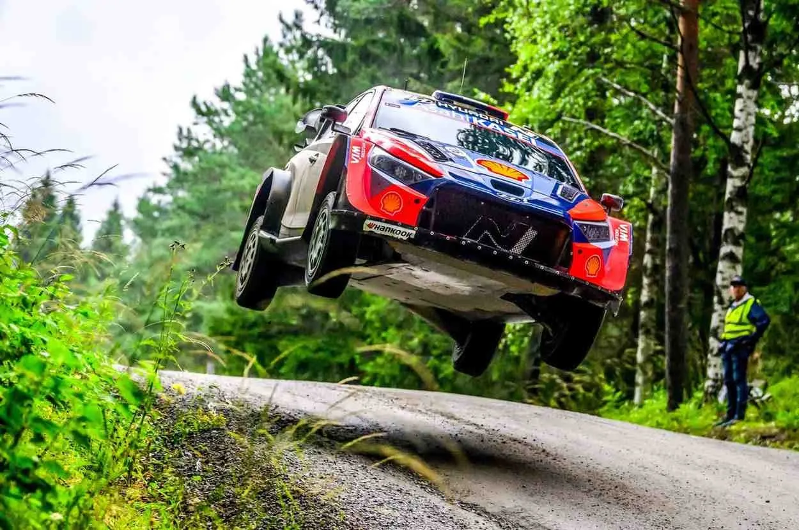
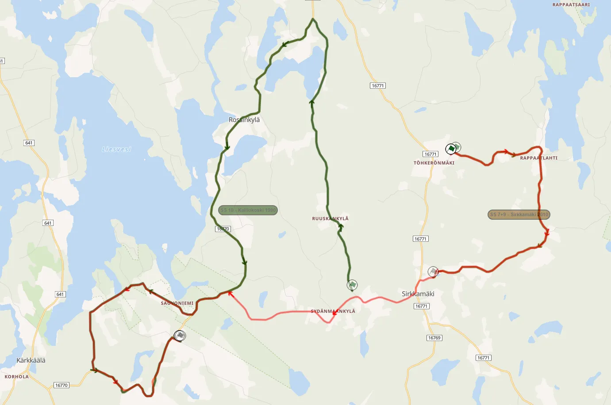
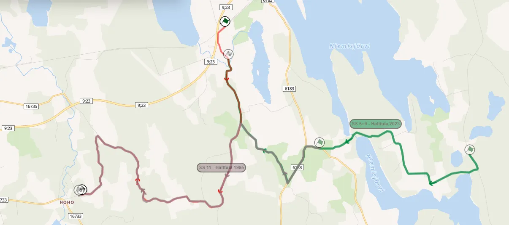
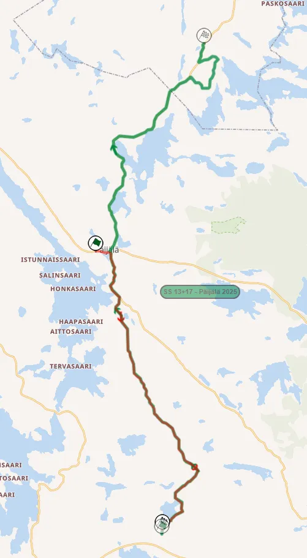
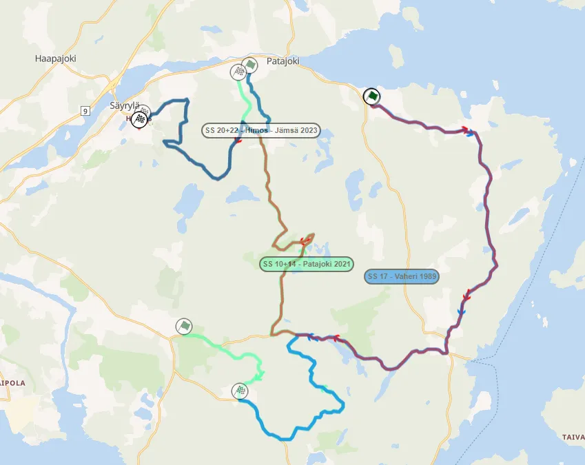

Rally Finland 2026: The Stages
Thumbnail: @ World
Stage Maps: Rally-Maps.com
Rally Finland celebrates its 75th edition with an itinerary that features significant changes compared to last year. Iconic stages like Ruuhimäki, Myhinpää and Ouninpohja are absent from the rally, with Himos returning as the only stage on Sunday. It's the first time Rally Finland will not include any roads used in the Ouninpohja stage since 2010.
Thursday
Thursday is the first day of the rally and it features the pre-event Shakedown and an SSS. Ruuhimäki is the shakedown, remaining unchanged compared to 2025, with Harju being the rally's opening stage.
Shakedown: Ruuhimäki - 4.12km
Changes compared to past editions: Identical to last year's Shakedown.
Stage description: Known for its famous jumps on the wide road, Ruuhimaki is a staple of Rally Finland. This year the test only plays host to the pre-event Shakedown and doesn’t feature in the rally proper. It starts off on the famous big Ruuhimaki road, that features a series of jumps. Following a junction, it becomes sandy and technical, with a huge man-made jump right at the finish.
SSS1/10 Harju - 2.56km
Changes compared to past editions: Identical to last year's layout.
Stage description: : One of the most famous Super Special Stages in the WRC. The Harju Super Special uses a mix of tarmac and gravel roads, going in and out of a park. It is very narrow in places, and it features a variety of roads, joined together by mostly junctions and slow corners.
The stage is repeated on Friday, as the day's closing test.
Friday
Friday features four stages, repeated twice in each loop, as well as a run through the Harju SSS in the afternoon. Myhinpää and Ruuhimäki have been dropped for this year, being replaced by Sydänmaa and Hoho.
SS2/6 Laukaa - 18.16km
Changes compared to past editions: Same layout as last year's version of Laukaa, only used in reverse direction.
Stage description: Following the start, which is on a wide road, it becomes narrow and technical, eventually joining a section that is angular, with many straights. After a junction at 5.7km, there’s a very narrow and rutted "Safari Section" amongst the trees. Esapekka Lappi crashed and lost a wheel here in 2024.
After that, the test continues onto a medium-wide road that is mostly high-speed for the next six kilometers, becoming narrower at 11.8km. The end of the test is high-speed, and wider.
The stage has claimed numerous top class drivers, including Oliver Solberg in 2022, Kris Meeke in 2019 and Esapekka Lappi in 2018.
SS3/7 Saarikas - 15.82km
Changes compared to past editions: Same layout and direction as last year.
Stage description: A relatively new stage for Rally Finland, being first used in 2024. The start is on a wide and flat-out road, becoming narrower and more technical and tricky following a junction. After another junction at 4.47km, it becomes wider, flowing and more high-speed, with a flat-out section which leads onto a hairpin at 10.23km. From then on, the stage remains high-speed, with a short more technical section just before the finish. Ott Tanak had a big accident on this stage in 2024, also hitting a tree last year. Oliver Solberg also had a roll in 2025.
SS4/8 Sydänmaa - 19.04km
Changes compared to past editions: A new stage, using sections of the 2010 Sirkkamäki test, and the old Kalliokoski stage from the early 1990s.

Sydänmaa (red) compared to Sirkkamäki (brown) and Kalliokoski (green)
Stage description: The start of the test was last used in 2010 and features a medium wide road that is flowing and high-speed, even more so after the 2.2km mark. Following a junction at 7.10km it becomes a bit more technical, remaining flowing, with ditches on the side of the road.
Onboard of the first 6.5km from the 2010 edition of the rally
At 11.56km it joins the route of the old Kalliokoski stage. This section is more angular, and features a series of long straights on a narrow road. Following another junction, the stage becomes wider and more flowing, until the finish.
SS5/9 Hoho - 9.55km
Changes compared to past editions: Another new stage on Friday. Hoho uses sections of the 2023 and 1995 versions of the Halttula stage.

The new Hoho stage (red) compared to Halttula (green) from 2023, and 1995 (purple)
Stage description: The start is medium-wide and generally high-speed, becoming narrower as it enters the forest. It gets very narrow and technical from 4.29km. It leaves the forest at 6.6km and becomes more flowing. Following a hairpin at 8km, it becomes very narrow again, and more high-speed towards the end. It is more angular, especially on the second half, than flowing.
Saturday
Just like Friday, Saturday is comprised of four stages, repeated twice, once in each loop. Parkkola and Leustu are mostly identical to 2025, with Päijälä and Västilä being run in different configurations.
SS11/15: Parkkola - 16.76km
Changes compared to past editions: Similar configuration as 2025, only extended by 1.34km from the finish for this year.
Stage description: The start is initially on a wide and cambered road, with the stage becoming narrow and technical following a junction. This section on the small road features elevation changes and crests. After a junction, the test follows a different road, which is wider and faster, and still features crests. It leads on to a haitpin at 10.2km, shortly after which the stage joins another narrower road, with a big jump at 11.80km. It has a mix of high-speed and technical sections until the finish. Carlos Sainz came too fast over a crest on this stage in 1991 and went off the road from the lead.
SS12/16 Päijälä - 10.55km
Changes compared to past editions: The stage has been shortened and reversed for this year. This version of Päijälä doesn’t use the classic Päijäläntie road, and instead utilizes the Sappeentie and Liehuntie roads, to the south of Päijälä. This road was last used in this direction in 2021.

This year's Päijälä (red) compared to last year's version of the stage
Stage description: Shortly after the start there’s a bridge crossing, after which the stage follows a road that features long, flowing, cambered corners with many elevation changes, giving the test a rollercoaster feeling. Following a junction at 2km, it becomes more technical, with consecutive medium speed and high-speed corners, changing between slower and faster. The end of the test is exceptionally technical but still features fast stretches. Takamoto Katsuta crashed out of the rally here in 2021.
SS13/17 Västilä - 19.10km
Changes compared to past editions: Run in reverse direction compared to 2025. It was last used in this direction back in 2001!
Stage description: The start of the stage is on open and wide roads, that are generally fast, and mostly medium wide. At 4.66km the test enters the forest, and becomes narrower initially, then wider, still fast, with a detour next to a farmhouse as a chicane. Before that, there's a short tarmac sequence as the road passes next to a junction at 6km.
The stage from that point on is wide, featuring cambered corners with crests and some jumps, until the finish. Gregoire Munster had an accident here in 2024.
Footage of Västilä in this direction from the 1999 edition of the rally (11:49)
SS14/18: Leustu - 16.44km
Changes compared to past editions: Leustu is used in the same configuration as last year.
Stage description: The start is almost exclusively flat-out, on a wide road. From 6.7 to 10km the test uses another wide and high-speed road, with flat-out sections, with some crests and jumps. At 9.10km the road passes through the famous Novikov jump from 2009, only in the opposite direction.
Following a junction at 10.5km, the road becomes narrower, but still fast, with a big jump at 12.5km. Another junction shortly after leads the crews to the more technical part of the test, which features a tricky downhill hairpin at 14.65km, and a fast but technical section until the finish.
Sunday
IJust like 2025, the final day of Rally Finland is comprised of one repeated stage. Himos - Jämsä is the longest stage of the rally, and at just over 30km
SS19/20 Himos - Jämsä - 30.02km
Changes compared to past editions: It combines the routes of the old Vaheri-Himos stage, as well as newer ones like Patajoki, and the 2023 Power Stage - Himos - Jämsä. It is the first Power Stage to be over 30km long since the 2013 Acropolis Rally, which featured a 30km version of SS Loutraki.

This year's Himos - Jämsä (red) compared to the 2023 Power Stage (dark blue), SS Patajoki from 2021 (green) and an older version of SS Vaheri (light blue)
Stage description: The start of the test is fast, on a wide road, with flowing characteristics, featuring elevation changes. The road then gets narrower as the stage enters the forest, remaining high-speed, with crests and nice flow.
Following a junction at 9.55km the test joins a wider road, that is fast and flowing, with many crests, featuring elevation changes. Sebastien Ogier had a big crash while testing for the 2017 edition of the rally here. This particular section hasn't been used since 2010!
Onboard of the high-speed and wide roads of Himos in reverse (4:05 to 10:50)
At 14.9km, the stage joins a road used in 2022 as part of SS Patajoki, and features many jumps and crests, on a medium-wide road. Following a tight junction at 18km, the test joins a narrow and quite rough piece of road, picking up the pace later with a big downhill section at the end of this road.
A hairpin leads the crews to the route of the 2023 Power Stage. It uses a mix of wide and narrower roads, climbing uphill before reaching the top of the hill. Andreas Mikkelsen had an accident here in 2015. The stage then joins a rough road, which follows a steep descent until the finish, which is located at the Himos parking area. Teemu Suninen almost had an off here in 2023.
What I would change
Despite what some might think, I am more than fine with the one repeated stage on Sunday format, especially since Himos - Jämsä has such variety of roads, and is over 30km long. Most of the changes I would make come on Friday. I am not a big fan of the two new stages, Sydänmaa and Hoho, and I would prefer if Saarikas was used in reverse, just like 2024. Personally, I would have rather had maybe a 2x2 loop of Laukaa and Saarikas, and then two repeated stages somewhere else, maybe Mökkiperä/Kruununperä. Another solution could be replacing Sydänmaa with Lankamaa and Hoho with Ruuhimäki, but that is a bit boring.
For Saturday, I really like Parkkola, Päijälä is very nice in this direction as well, maybe the full 20km would have been nice. I would have liked to see Ouninpohja on Saturday, probably to the expense of Leustu. If there had to be a stage around Leustu, I would have liked to see more roads from Vellipohja, over the ultra high-speed start which is a bit boring.


Comments